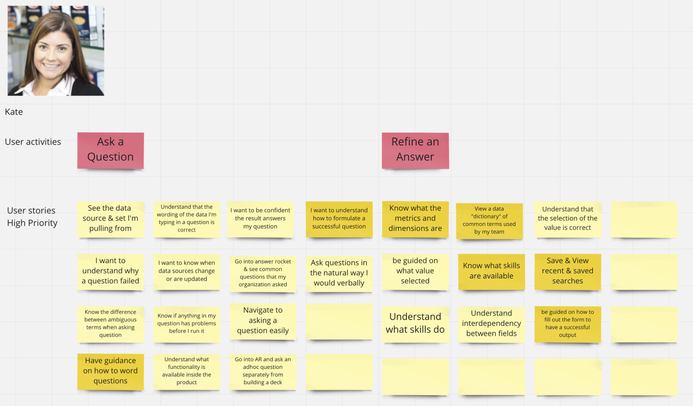
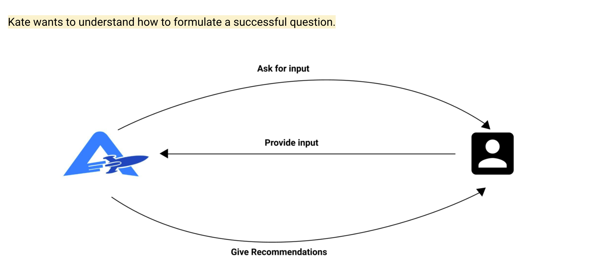
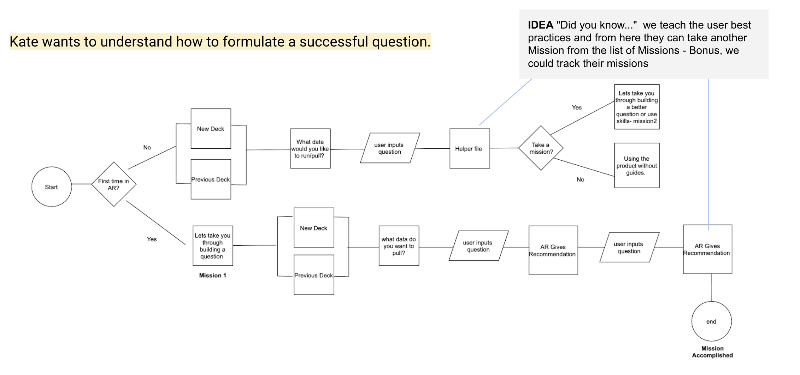
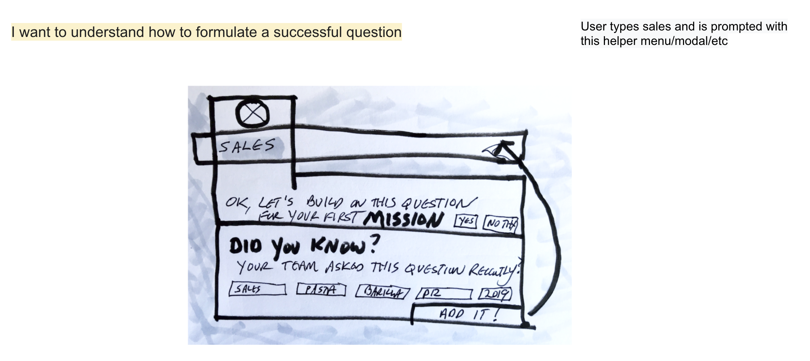
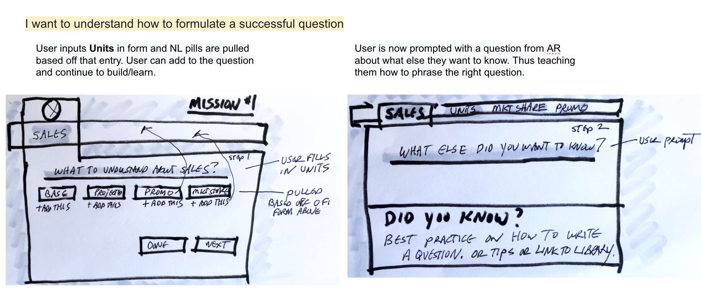
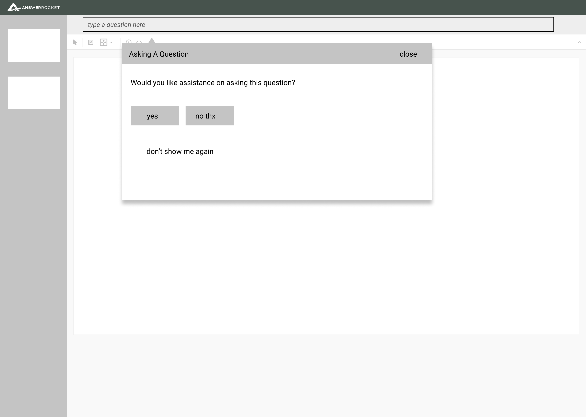
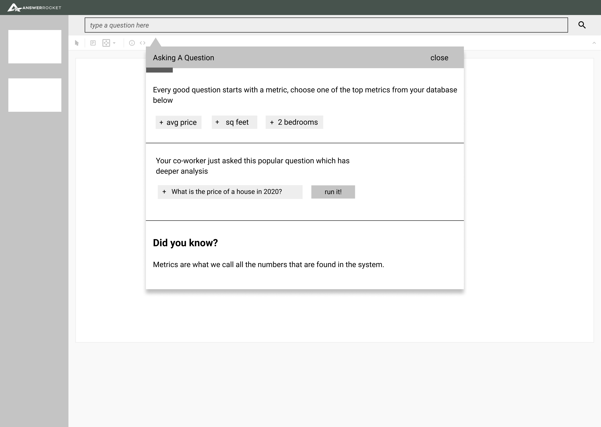

User Interviews
We interviewed three customers that fit our target persona and surfaced these key takeaways from the research:
New Interviews
- Need a Data Glossary/Data dictionary of what each metric/dim means
- More reference when constructing new queries, hiding keywords that are incompatible
- Provide more tutorials
- Don’t know how data is written / formatted
- Need “A cheat sheet”
- Don’t know when data changes / data updates or when data is missing
- Don’t know if answer is accurate
- Wish it was more conversational, like Google
We combed through older recorded customer interviews from the services team and surfaced these key takeaways from that research:
Past Interviews
- Difficult to ask a question in the exact way needed to get an answer (mentioned 17 times)
- Users are not familiar with the data (mentioned 15 times)
- Users don't know how the data is formatted (mentioned 15 times)
- Users don't know what data is loaded/available or timing of data loads (mentioned 15 times)
- Can’t switch between pills and underline between Refine and NL (Natural Language)
User Stories
Me and Caroline held a remote workshop to generate user stories with Stef using Mural. We generated this sample set of user stories to shop to our head of product and CEO to tackle in our upcoming flows and wireframes.
- Kate wants to understand how to formulate a successful question so that she can explore here latest business data
- Kate wants to view a data “dictionary” of common terms used by her team so that she can easily find key insights in her data
- Kate wants to know what skills are available so that she run these skills and explore the data
- Kate wants to save searches and view saved searches so that it is easy for her to search the data when it refreshes.
Userflows
When we set out to tackle the userflows I had been toying with the idea to use guided and onboarding experiences to help this persona get familiar with their data and asking questions. Missions was born. We wanted to use the following idea below to help guide the user:
The userflows helped communicate our ideas around "Missions" in the application so user's could be educated on how to best navigate and do their tasks within AnswerRocket.
Challenges
Development still not at the table at this point. I'm asking for but not getting in front of development to shop these concepts around. We presented our stories, flows and sketches to our CEO for feedback. Some feedback was given and the A-OK to move forward with wireframes. I'm not getting into the feedback loops I need to be in to execute this properly.
Sketches and Wireframes
We presented the following sketches and wireframes to the product team and CEO for intitial feedback on the concept. We recieved some great feedback around the ideas of Missions within the application and set out to prototype and user test this next.
Sketches
 Wireframes
 View the Figma Prototype
Usability Testing
We are moving fairly quickly at this point and decide that MAZE remote usability testing would be our best bet. We set up the following prototype with the mission below to guage some user feedback on our proposed solution.
Mission - Create a question in the following screens that you would like answered about real estate.
Opinion - Did you understand the question that you crafted?
Opinion - What is your reaction to the instructions throughout the screens?
Open Question - What do you believe is the most beneficial feature in helping you build your question? What do you think is missing from this experience?
Open Question - What’s another question you would ask about real
estate if you were asked to? (ask Les about how confident they are in structuring another questions, if they had to do it again, how
confident)
Usability Testing Results Maze
22 Users - Remote through Maze
Insights:
Did you understand the question that you crafted?
- 47% of users had a great experience
- 48% of users had a moderate experience
- 6% of users had a poor experience
What is your reaction to the instructions throughout the screens?
- 59% of users had a great experience
- 30% of users had a moderate experience
- 12% of users had a poor experience
What do you believe is the most beneficial portion of helping you build your question?
- Patterns: “Quick Tags” mentioned 7 times out of 13 testers
What do you think is missing from the experience?
- Categories & Filtering - Many users thought they were going to typing natural language
What's Next?
We presented our key findings from the usability testing, but to our surprise we were told that we were pivoting to a brand new project and this work would be shelved for now. It has been a few months and we still have not revisitied this project.
Lessons Learned
This was really the first time in the seven years that this organization has been around that a proper design process with research was put in place. I knew there would be some transition here and was looking to do a retrospective on the process with the stakeholders, but that never happened. I do believe that we surfaced some really key issues with the user experience through research and process.

{kind=link}